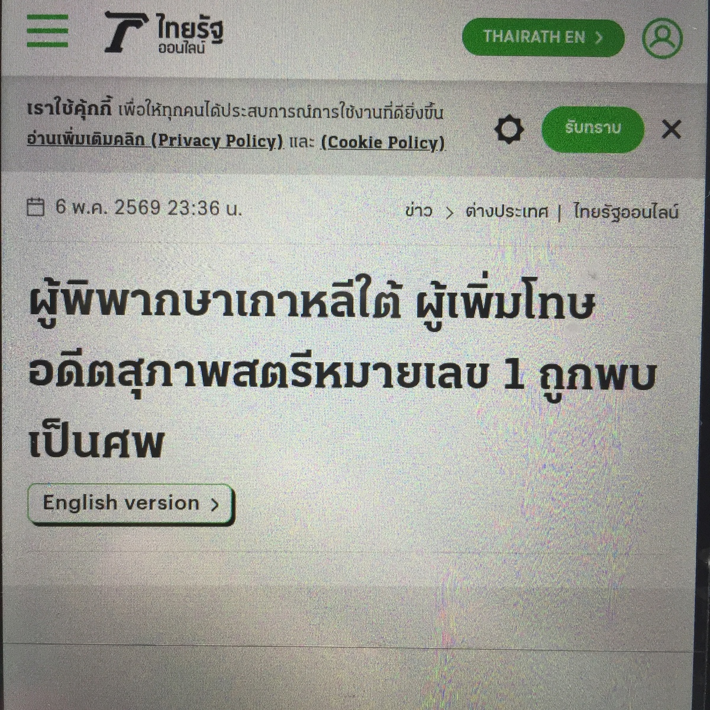
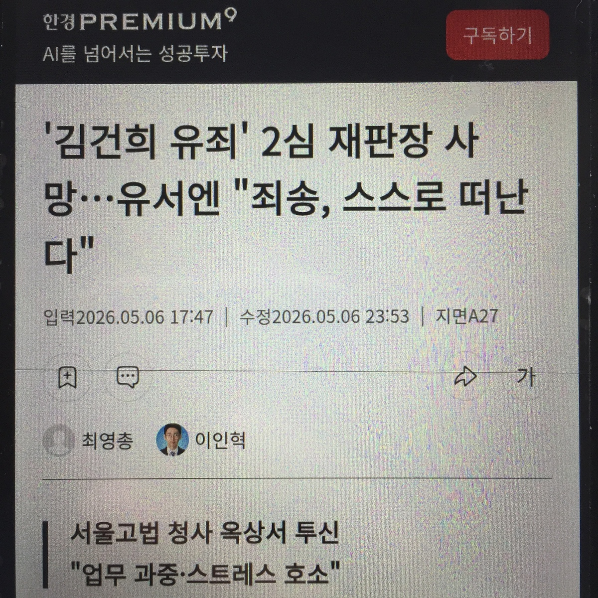
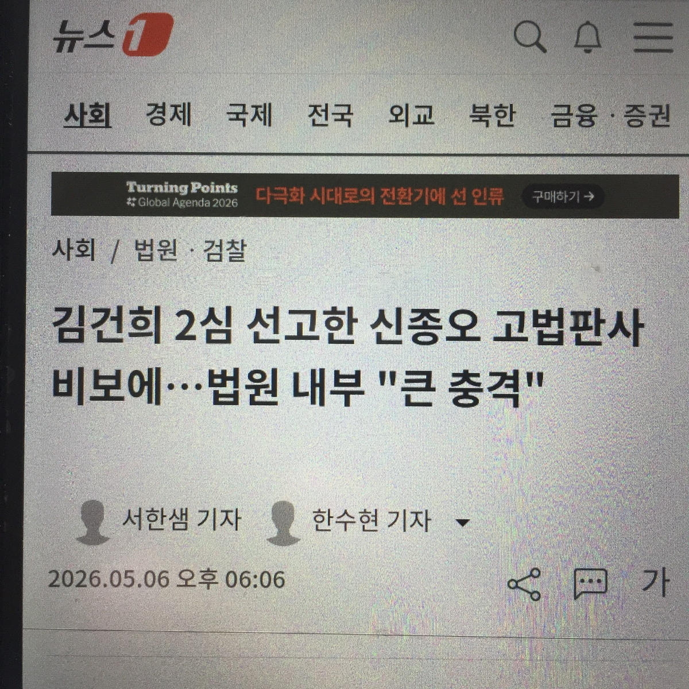
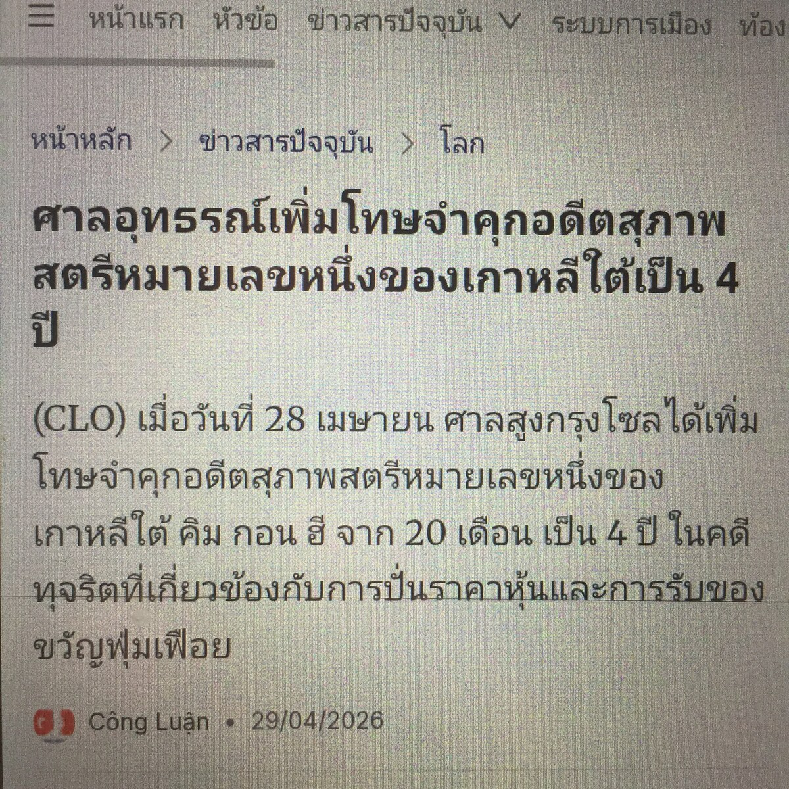
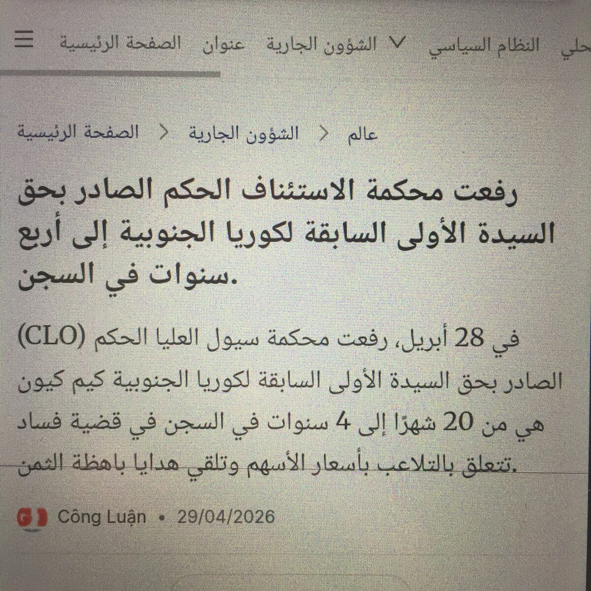
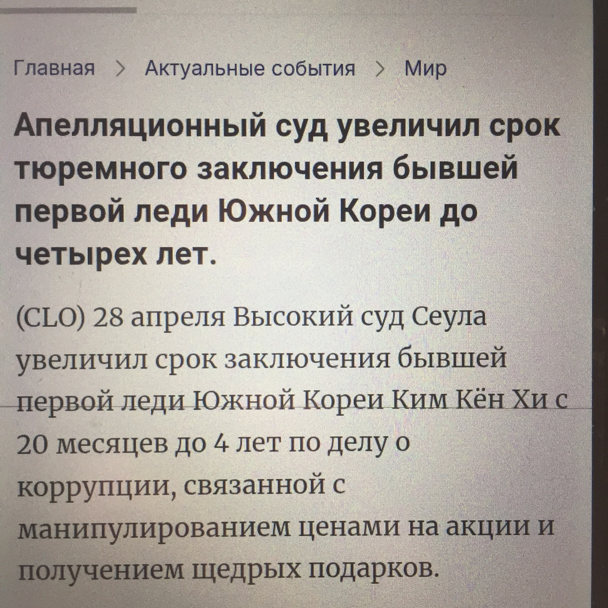

Some codes which you can test on Google Colab
Google Colab: https://colab.new
!pip install feedparser janome googletrans==4.0.0-rc1 bs4 qrcode
import time
import random
from IPython.display import HTML, Image, display
import feedparser
from janome.tokenizer import Tokenizer
from googletrans import Translator
import requests
from bs4 import BeautifulSoup
import qrcode
feed_urls = [
"https://news.yahoo.co.jp/rss/categories/domestic.xml",
"https://news.yahoo.co.jp/rss/categories/world.xml",
"https://news.yahoo.co.jp/rss/categories/business.xml",
"https://news.yahoo.co.jp/rss/categories/entertainment.xml",
"https://news.yahoo.co.jp/rss/categories/sports.xml",
"https://news.yahoo.co.jp/rss/categories/it.xml",
"https://news.yahoo.co.jp/rss/categories/science.xml",
"https://news.yahoo.co.jp/rss/categories/life.xml",
"https://news.yahoo.co.jp/rss/categories/local.xml",
"https://www.asahi.com/rss/asahi/newsheadlines.rdf",
"https://www.asahi.com/rss/asahi/international.rdf",
"https://business.nikkei.com/rss/sns/nb.rdf",
"https://news.ntv.co.jp/rss/index.rdf",
"https://news.web.nhk/n-data/conf/na/rss/cat0.xml"
]
jtokenizer = Tokenizer()
trans = Translator()
def printArticleFormatted(title):
try:
line = '<h3>'
i = 1
for tok in jtokenizer.tokenize(title):
if (i % 2 == 0):
line += '<ruby style="font-family: serif; color: #f7c111;">' + tok.surface
else:
line += '<ruby style="font-family: sans-serif; color: #0c0c0c;">' + tok.surface
if (tok.part_of_speech.split(',')[0] == '名詞'):
translated = trans.translate(tok.base_form, dest='en').text
line += '<rt>' + translated + '</rt>'
line += '</ruby>'
i += 1
line += '</h3>'
display(HTML(line))
except Exception as e:
print('Error in printArticleFormatted: ' + str(e))
def printTranslateds(text):
try:
print(trans.translate(text, dest='ko').text)
print(trans.translate(text, dest='zh-TW').text)
print(trans.translate(text, dest='en').text)
except Exception as e:
print('Error in printTranslateds: ' + str(e))
def printArticleImage(url):
try:
line = ''
res = requests.get(url)
soup = BeautifulSoup(res.text, 'html.parser')
tags = soup.select("[property='og:image']")
if (len(tags) > 0):
imgurl = tags[0].get('content')
else:
imgurl = '#'
line += '<figure>'
line += '<img style="max-width: 200px;" src="' + imgurl + '" />'
line += '</figure>'
display(HTML(line))
except Exception as e:
print('Error in printArticleImage: ' + str(e))
def printQR(url):
try:
img_dest = 'temp.png'
img = qrcode.make(url)
img.save(img_dest)
display(Image(filename=img_dest))
except Exception as e:
print('Error in printQR: ' + str(e))
def printLatestArticleOfMyBlog():
try:
feed_url = "https://mycatiskorean.blogspot.com//feeds/posts/default"
f = feedparser.parse(feed_url)
entry = f.entries[0]
print(entry.title)
print(entry.link)
except Exception as e:
print('Error in printLatestArticleOfMyBlog: ' + str(e))
while True:
try:
title = 'n/a'
url = 'n/a'
random.shuffle(feed_urls)
for furl in feed_urls:
feed = feedparser.parse(furl)
if (len(feed.entries) == 0):
pass
else:
entry = feed.entries[random.randint(0, len(feed.entries)-1)]
title = entry.title
url = entry.link
break
printArticleImage(url)
printArticleFormatted(title)
printQR(url)
printTranslateds(title)
print(url)
printLatestArticleOfMyBlog()
except Exception as e:
print('Error in main loop: ' + str(e))
time.sleep(3)
!pip install feedparser kiwipiepy googletrans==4.0.0-rc1 bs4 qrcode
import time
import random
from IPython.display import HTML, Image, display
import feedparser
from kiwipiepy import Kiwi
from googletrans import Translator
import requests
from bs4 import BeautifulSoup
import qrcode
feed_urls = [
"https://www.yna.co.kr/rss/news.xml",
"https://www.newsis.com/RSS/sokbo.xml",
"https://www.newsis.com/RSS/square.xml",
"https://www.newsis.com/RSS/entertain.xml",
"https://www.newsis.com/RSS/photo.xml",
"https://news-ex.jtbc.co.kr/v1/get/rss/newsflesh",
"https://news.sbs.co.kr/news/newsflashRssFeed.do?plink=RSSREADER"
]
ktokenizer = Kiwi()
trans = Translator()
def printArticleFormatted(title):
try:
line = '<h3>'
i = 1
for tok in ktokenizer.tokenize(title):
if (i % 2 == 0):
line += '<ruby style="font-family: serif; color: #f7c111;">' + tok.form
else:
line += '<ruby style="font-family: sans-serif; color: #0c0c0c;">' + tok.form
if tok.tag == 'NNG' or \
tok.tag == 'NNP' or \
tok.tag == 'NNB':
translated = trans.translate(tok.form, dest='en').text
line += '<rt>' + translated + '</rt>'
line += '</ruby>'
i += 1
line += '</h3>'
display(HTML(line))
except Exception as e:
print('Error in printArticleFormatted: ' + str(e))
def printTranslateds(text):
try:
print(trans.translate(text, dest='en').text)
print(trans.translate(text, dest='zh-TW').text)
print(trans.translate(text, dest='ja').text)
except Exception as e:
print('Error in printTranslateds: ' + str(e))
def printArticleImage(url):
try:
line = ''
res = requests.get(url)
soup = BeautifulSoup(res.text, 'html.parser')
tags = soup.select("[property='og:image']")
if (len(tags) > 0):
imgurl = tags[0].get('content')
else:
imgurl = '#'
line += '<figure>'
line += '<img style="max-width: 200px;" src="' + imgurl + '" />'
line += '</figure>'
display(HTML(line))
except Exception as e:
print('Error in printArticleImage: ' + str(e))
def printQR(url):
try:
img_dest = 'temp.png'
img = qrcode.make(url)
img.save(img_dest)
display(Image(filename=img_dest))
except Exception as e:
print('Error in printQR: ' + str(e))
def printLatestArticleOfMyBlog():
try:
feed_url = "https://mycatiskorean.blogspot.com//feeds/posts/default"
f = feedparser.parse(feed_url)
entry = f.entries[0]
print(entry.title)
print(entry.link)
except Exception as e:
print('Error in printLatestArticleOfMyBlog: ' + str(e))
while True:
try:
title = 'n/a'
url = 'n/a'
random.shuffle(feed_urls)
for furl in feed_urls:
feed = feedparser.parse(furl)
if (len(feed.entries) == 0):
pass
else:
entry = feed.entries[random.randint(0, len(feed.entries)-1)]
title = entry.title
url = entry.link
break
printArticleImage(url)
print(title)
printArticleFormatted(title)
printQR(url)
printTranslateds(title)
print(url)
printLatestArticleOfMyBlog()
except Exception as e:
print('Error in main loop: ' + str(e))
time.sleep(3)
!pip install googletrans==4.0.0-rc1 bs4 qrcode
import time
import random
from IPython.display import HTML, Image, display
from googletrans import Translator
import requests
from bs4 import BeautifulSoup
import qrcode
trans = Translator()
def getRandomRecipeURL():
try:
# select a random list which contains some links to articles.
list_url = 'https://www.10000recipe.com/recipe/list.html?order=date&page='
page = random.randint(2, 777)
res = requests.get(list_url + str(page))
soup = BeautifulSoup(res.text, 'html.parser')
# now pick one of the links.
tags = soup.select("[class='common_sp_link']")
randtag = tags[random.randint(0, len(tags) - 1)]
return 'https://www.10000recipe.com' + randtag.get('href')
except Exception as e:
print('Error in getRandomRecipeURL: ' + str(e))
return ''
def printArticleImage(url):
try:
line = ''
res = requests.get(url)
soup = BeautifulSoup(res.text, 'html.parser')
tags = soup.select("[property='og:image']")
if (len(tags) > 0):
imgurl = tags[0].get('content')
else:
imgurl = '#'
line += '<figure>'
line += '<img style="max-width: 200px;" src="' + imgurl + '" />'
line += '</figure>'
display(HTML(line))
except Exception as e:
print('Error in printArticleImage: ' + str(e))
def printQR(url):
try:
img_dest = 'temp.png'
img = qrcode.make(url)
img.save(img_dest)
display(Image(filename=img_dest))
except Exception as e:
print('Error in printQR: ' + str(e))
def printTitles(url):
try:
res = requests.get(url)
soup = BeautifulSoup(res.text, 'html.parser')
tags = soup.select("title")
title = tags[0].get_text()
print(title)
print(trans.translate(title, dest='en').text)
print(trans.translate(title, dest='zh-TW').text)
print(trans.translate(title, dest='ja').text)
except Exception as e:
print('Error in printTitles: ' + str(e))
while True:
try:
url = getRandomRecipeURL()
print(url)
printQR(url)
printTitles(url)
printArticleImage(url)
except Exception as e:
print('Error in main loop: ' + str(e))
time.sleep(3)
Wiki articles for Kim Keon-Hee's criminal trials
1. 金健希が懲役4年を宣告された事件
2. 金健希が韓鶴子とつるんだ事件
3. 金健希が懲役7年6ヶ月を求刑された事件
Videos
-
A. 25/9/24 1審 第1回公判
https://www.youtube.com/live/8ZSsKNsMI70 -
B. 25/11/19 1審 第10回公判
https://www.youtube.com/live/frWFHrD6Xpc -
C. 25/12/3 1審 結審公判
https://www.youtube.com/live/SLa6wrbrZjY -
D. 26/1/28 1審 宣告公判
https://www.youtube.com/live/ftg7k6h3q7w
https://youtu.be/lPNwF9FJkKA -
E. 26/4/13 박성재裁判 (金建希は証人として出席しただけですが、例外的に公開されたようです。このことが原因である噂が強化されたことでしょう)
https://youtu.be/owKR-hBb2jo -
F. 26/4/28 金健希が懲役4年を宣告された例の呪いの映像です
https://youtu.be/aFGuQ4Dd9_M
Remember Judge Shin Jong-oh's death
「金建希２審」担当判事、遺体で発見 「申し訳ない」遺書残す
https://www.donga.com/jp/article/all/20260507/6215992/1
South Korean judge who hiked ex-first lady's jail sentence found dead
https://www.japantimes.co.jp/news/2026/05/06/asia-pacific/crime-legal/south-korea-judge-dead/
Judge who sentenced South Korea’s former first lady to jail found dead
- https://wartalombok.pikiran-rakyat.com/entertainment/pr-10710191523/hakim-korea-selatan-ditemukan-tewas-setelah-tangani-kasus-kim-keon-hee
- https://congluan.vn/tham-phan-xet-xu-cuu-de-nhat-phu-nhan-han-quoc-bat-ngo-tu-vong-post345102.html
- https://vn.asiatoday.co.kr/view.php?key=20260506001104326
- https://www.straitstimes.com/asia/east-asia/judge-who-convicted-south-korean-ex-first-lady-kim-keon-hee-found-dead-days-after-ruling
- https://www.thairath.co.th/news/foreign/2931082
- https://hindi.news18.com/world/south-asia-south-korea-former-president-s-wife-sentenced-judge-found-dead-very-next-day-10449850.html
- https://www.ndtv.com/world-news/judge-shin-jong-oh-who-handed-south-korea-s-ex-first-lady-4-year-jail-term-found-dead-11460536
- https://www.aa.com.tr/en/asia-pacific/south-korean-judge-in-former-first-lady-s-appeals-trial-on-corruption-charges-found-dead/3928348
- https://yjcnews.ir/fa/news/9083776/%D9%85%D8%B1%DA%AF-%D9%85%D8%B1%D9%85%D9%88%D8%B2-%D9%82%D8%A7%D8%B6%DB%8C-%DA%A9%D9%87-%D8%AD%DA%A9%D9%85-%D8%AD%D8%A8%D8%B3-%D8%A8%D8%A7%D9%86%D9%88%DB%8C-%D8%A7%D9%88%D9%84-%D8%B3%D8%A7%D8%A8%D9%82-%DA%A9%D8%B1%D9%87-%D8%AC%D9%86%D9%88%D8%A8%DB%8C-%D8%B1%D8%A7-%D8%AF%D9%88-%D8%A8%D8%B1%D8%A7%D8%A8%D8%B1-%DA%A9%D8%B1%D8%AF
- https://arabic.rt.com/world/1786005-%D9%83%D9%88%D8%B1%D9%8A%D8%A7-%D8%A7%D9%84%D8%AC%D9%86%D9%88%D8%A8%D9%8A%D8%A9-%D8%A7%D9%84%D8%B9%D8%AB%D9%88%D8%B1-%D8%B9%D9%84%D9%89-%D8%A7%D9%84%D9%82%D8%A7%D8%B6%D9%8A-%D8%A7%D9%84%D8%B0%D9%8A-%D8%AA%D8%B1%D8%A3%D8%B3-%D8%A7%D8%B3%D8%AA%D8%A6%D9%86%D8%A7%D9%81-%D9%82%D8%B6%D9%8A%D8%A9-%D8%A7%D9%84%D8%B3%D9%8A%D8%AF%D8%A9-%D8%A7%D9%84%D8%A3%D9%88%D9%84%D9%89-%D8%A7%D9%84%D8%B3%D8%A7%D8%A8%D9%82%D8%A9-%D9%85%D9%8A%D8%AA%D8%A7/
- https://www.vedomosti.ru/politics/news/2026/05/06/1195453-sudyu-nashli-mertvim
- https://www.elconfidencial.com/mundo/2026-05-06/juez-muerto-corrupcion-corea-seul-1tps_4350550/
- https://cnnportugal.iol.pt/kim-keon-hee/shin-jong-o/juiz-que-agravou-sentenca-da-ex-primeira-dama-da-coreia-do-sul-encontrado-morto/20260506/69faf3ffd34e28842c83b257
- https://www.voceliberaweb.it/seoul-il-giudice-della-condanna-a-kim-keon-hee-trovato-morto-tra-dubbi-e-tensioni-istituzionali/
- https://www.lefigaro.fr/international/un-juge-sud-coreen-qui-avait-double-la-peine-d-emprisonnement-de-l-ex-premiere-dame-du-pays-a-ete-retrouve-mort-20260506
- https://www.independent.co.uk/asia/east-asia/south-korea-judge-death-first-lady-kim-keon-hee-b2971214.html
- https://view.inews.qq.com/k/20260506A03N9300?scene=wap&adChannelId=news&no-redirect=1
- https://www.lawtimes.co.kr/news/articleView.html?idxno=220361
- https://www.khan.co.kr/article/202605061534001
- https://www.joongang.co.kr/article/25426007
- https://www.yna.co.kr/view/AKR20260506033952004
- https://www.newsis.com/view/NISX20260506_0003618122
- https://www.hankyung.com/article/2026050696821
- https://www.news1.kr/society/court-prosecution/6158681







26. 4. 28
- 韓国・前大統領夫人の金建希被告に懲役4年の2審判決 あっせん収賄罪など
- 金建希涉收受統一教賄賂、炒股 二審加重判4年
- Ex-first lady gets 4 years over graft, stock manipulation
- 尹锡悦夫人金建希涉操纵股价及受贿案二审宣判 获刑4年
- (LEAD) L'ex-Première dame Kim Keon Hee condamnée en appel à 4 ans de prison pour corruption
- 韓国前大統領の妻に懲役4年の実刑判決 一審判決上回る
- 김건희 2심 징역4년 …'도이치 주가조작' 유죄
- https://youtu.be/4Y3FQP4oMkk
- https://youtu.be/5Nz0zXYA-6M





